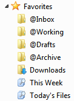
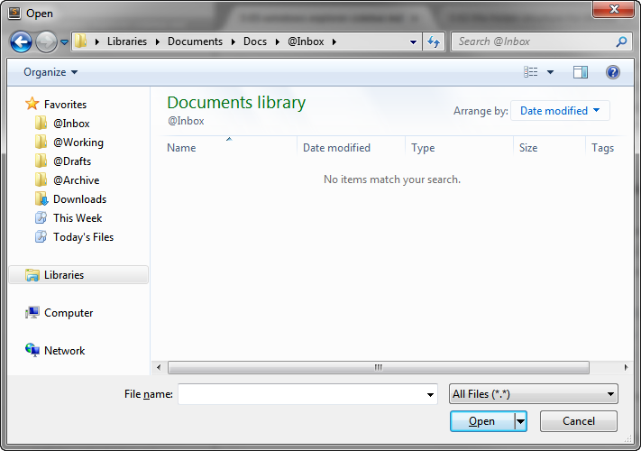

Windows Explorer Sidebar
Favorites
I have seen people either never use the Favorites section of the Windows Explorer sidebar, or they put so many shortcuts in their Favorites list that it becomes as long or longer than the mess of folders that begat it.
Adding a short list of well-chosen Favorites is important because they allow you to jump directly to the folders you want, not only in Windows Explorer, but also in File Open and File Save dialogs across all applications.
Here is my Windows Explorer sidebar:

Note how the same Favorites are present in a typical File Open dialog:

The most-used shortcuts, "@Inbox" and "Today's Files" go at the ends of the Favorites list, where they are easiest to see and to click on.
The first four folders in my sidebar are the basic building blocks of my File Folder Structure for Life: "@Inbox", "@Working", "@Drafts", and "@Archive". Because the "@Working" folder contains shortcuts to all my current project folders (and sometimes to my current files), I don't have to modify the Favorites in the sidebar very often. This keeps the list short and easy to click on.
The default "Downloads" folder of the web browser follows them. I prefer not to download files to my "@Inbox" folder, because I don't always take action on my downloads immediately, and some of them are software installers as opposed to work files.
The two saved searches at the end are huge time-savers. "Today's Files" is especially useful for attaching the file you just saved to the email you are writing. You can save any search you made from Windows Explorer; it makes sense to confine them to the "Docs" folder, however.